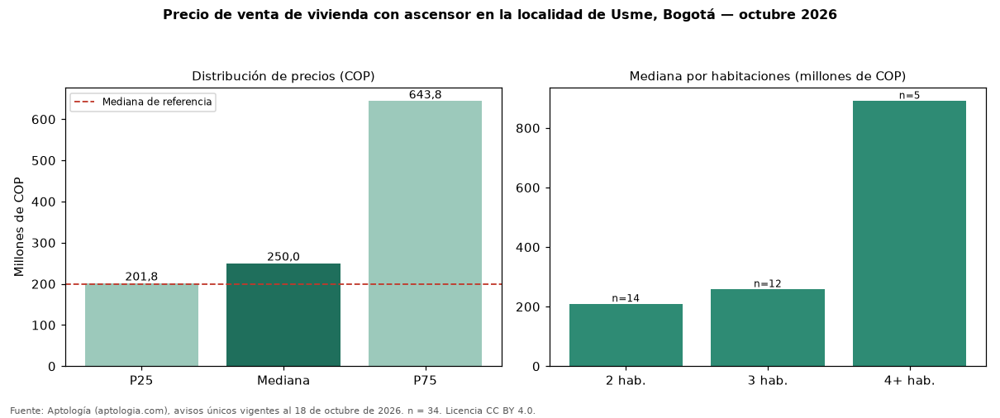

Precio de venta de vivienda con ascensor en la localidad de Usme, Bogotá — octubre 2026
COP 250 millones es la mediana de venta de vivienda con ascensor en la localidad de Usme, Bogotá, según 34 avisos únicos. Frente a toda la oferta de venta en la localidad de Usme, Bogotá (COP 200 millones), la diferencia es de 25 % por encima. Frente a los avisos sin ascensor del mismo grupo (COP 185 millones, n = 170), la diferencia es de +35 %; por metro cuadrado, +38 %. En todo Bogotá, la misma combinación tiene mediana COP 835 millones (−70 %). El rango intercuartílico va de COP 202 millones a COP 644 millones (razón 3,2). Por metro cuadrado, la mediana es COP 4.375.000/m² (+38 % frente a COP 3.169.811/m²), puesto 18 de 18 localidades comparables. Por habitaciones: 2 habitaciones, COP 208 millones (n = 14); 3 habitaciones, COP 258 millones (n = 12); 4 o más habitaciones, COP 890 millones (n = 5). Datos abiertos CC BY 4.0 de Aptología; fuente y búsqueda de inmuebles: https://www.aptologia.com/venta/bogota/usme. Archivos: PDF de 2 páginas, CSV con las cifras y gráfica PNG.

| Avisos únicos | 34 |
|---|---|
| Percentil 25 | COP 201.750.000 |
| Mediana | COP 250.000.000 |
| Percentil 75 | COP 643.807.500 |
| Mediana por m² | COP 4.375.000 |
Fuente: avisos vigentes de portales inmobiliarios recopilados por Aptología, deduplicados (mínimo 30 avisos únicos por celda). Precios pedidos, no cerrados. Fecha: 2026-10-18.